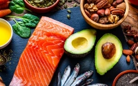
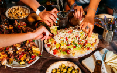
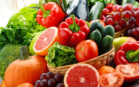
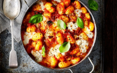

Maistas?
Labai puiku!
Parašykite savo el. pašto adresa norint sekti naujienas:

Žuvis papirko avokadus riešutais
Avokadai pastebėjo be leidimo į territoriją atvykusia žuvį, tačiau žuvis išsisuko papirkdami avokadus. Avokadams laukia bausmė, o žuvis taip ir liko nerasta.
Žuvis papirko avokadus riešutais
Avokadai pastebėjo be leidimo į territoriją atvykusia žuvį, tačiau žuvis išsisuko papirkdami avokadus. Avokadams laukia bausmė, o žuvis taip ir liko nerasta.

Picos pralaimėjo karą prieš žmonija
Grupuotė žmonių su peiliais puolė picas, todėl jos stengėsi iš visų jėgų atsilaikyti prieš žmonių grupę, tačiau tai buvo nesėkminga. Po valandos laiko kovojimo, išlikusios picos suprato, kad priešintis yra beprasmiška.
Picos pralaimėjo karą prieš žmonija
Grupuotė žmonių su peiliais puolė picas, todėl jos stengėsi iš visų jėgų atsilaikyti prieš žmonių grupę, tačiau tai buvo nesėkminga. Po valandos laiko kovojimo, išlikusios picos suprato, kad priešintis yra beprasmiška.

Daržovės didina armija ir ruošiasi blogiausiam
Daržovės išgirdusios apie skausmingą picų karo praleimėjimą, pradėjo ruoštis blogiausiam. Didina savo armija ir laukia, kol jie bus sekanti žmonijos auka.
Daržovės didina armija ir ruošiasi blogiausiam
Daržovės išgirdusios apie skausmingą picų karo praleimėjimą, pradėjo ruoštis blogiausiam. Didina savo armija ir laukia, kol jie bus sekanti žmonijos auka.

Sriuba paskelbė nepriklausomybe
Sriuba susibūrė su krienais ir Trinidado Morugos Skorpiono veislės čili pipirais, todėl neatsirado nei vieno žmogaus kurie išdrįstų kovoti prieš šią sriubą, todėl ji paskelbė nepriklausomybę.
Sriuba paskelbė nepriklausomybe
Sriuba susibūrė su krienais ir Trinidado Morugos Skorpiono veislės čili pipirais, todėl neatsirado nei vieno žmogaus kurie išdrįstų kovoti prieš šią sriubą, todėl ji paskelbė nepriklausomybę.
 @Twitter
@Twitter
 @Facebook
@Facebook
Svetainės kalba html ir css
§ Svetainė kūrė Julius Burdyginas
§ Svetainė kūrė Julius Burdyginas